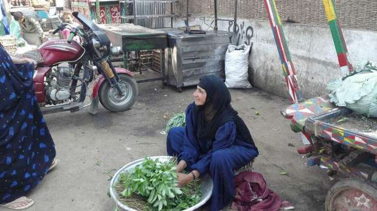
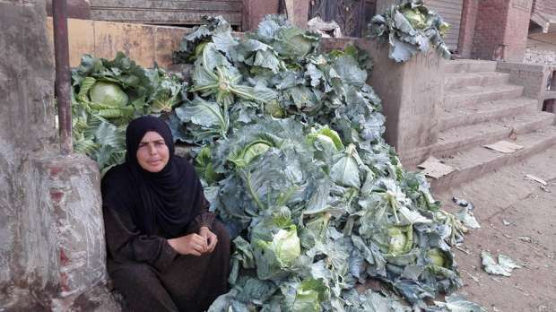
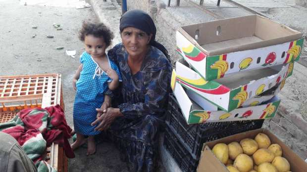

أحدث الأخبار
- الخارجية: مصر تعزي إثيوبيا في ضحايا حادث الإنهيار الأرضي
- الموازنة الجديدة وحل اتحاد الكرة واحتياطي القمح.. أبرز العناوين
- الزمالك يكتسح رينجرز النيجيري بأربعة أهداف مقابل هدف وحيد
- القضاء الإداري يقضي بحل اتحاد الكرة وبطلان الانتخابات الأخيرة
- مقتل 3 أشخاص وإصابة 3 آخرين في حادث مروري بالبحيرة
- وزير الخارجية يجري اتصالاً مع رئيس المجلس الرئاسي الليبي
- عاصمة مصر تتجه لزيادة سكانية نصف مليون العام الجاري
- باولو يقود هجوم الزمالك أمام رينجرز في دوري الأبطال
مصريات على رصيف الحياة: السرير أقفاص فاكهة والأمنيات كشك صغير ورحلة حج
مزارعة مصرية تعمل بالحقول- صورة لأصوات مصرية 1يوليو 2016
هُن " مصر" التي تسعى لرزقها على أرصفة الحياة ، تسافر يومياً من أرضها البكر المنتجة لشتى الزروع، إلى أرضها البراح المتعطشة لخيرات الريف، لتكون النتيجة كدا ومعاناة، تعيشه نساء متزوجات وأرامل وفتيات يوميا، وسط رحلة كفاح يجلسن خلالها على أرصفة الاسواق الشعبية، لبيع ما يمكنهن بيعه، من ألبان وزورع ، هي حصاد ما يلقيه أزواجهن برحم الارض، من بذور تخضر وتنضج ومعها أحلامهن بالستر.
رغم شقاء الانتقال من الريف، والجلوس في أسواق المدينة المكتظة بالمارة، المليئة بالضجيج والمخاطر، اعتادت كثيرات من فقيرات القرى، السفر يومياً، يتحدين الفقر بافتراش الأرض بشتى الثمار والزروع، لا يقيهن حرارة شمس ملتهبة، أو بطش رجال الشرطة وأصحاب محلات، سوى الثقة التي عبرت عنها بائعة الملوخية منى بأن "من قصد باب رب كريم كفاه".
"أصوات مصرية" كانت بينهن لتنقل صورة مصغرة مختصرة، لما تعنيه ظروف الانتقال من بيت الريف الوادع إلى شارع المدينة الصاخب، ولتجسد معاناتهن بالصورة والكلمة.
تبدأ الرحلة يومياً مع خيوط الضوء الأولى للفجر التي تتراقص عليها حبات ندى أنقى من اللؤلؤ.." القطار" وسيلتهن الأرخص والأسهل في نقل بضائعهن، حيث يتجهن محملات بعشرات الكيلوجرامات من الخضار والجبن الفلاحي من قرى " القطا وبرقاش ونكلا "، إلى أسواق " برطس" مركز إمبابة محافظة الجيزة. يدخلن إلى السوق كأنهن سمك صغير يلقي بنفسه في بحر هائل مليء بالسمك الكبير.
بائعة الملوخية
الروايات العالمية التي تغزلت في صورة بائعة الورد الساحرة، فاتها الكثير حين غابت عنها صورة الإبتسامة الساحرة الدائمة على شفتي "منى" ابنة قرية نكلا التي اشتهرت بلقب "بائعة الملوخية" باعتبارها سلعتها الأساسية في تجارتها اليومية. تتحدى تعب الحياة بابتسامة لا تفارق محياها، وتقول إنها "تزرع لتحصد ..وتبيع لتجمع أموالا تنفقها على اسرتها المكونة من أربعة أفراد غاب عنهم الأب بعد صراع طويل مع المرض".

الحاجة منى تبيع "الملوخية " في الاسواق- صورة لأصوات مصرية 1يوليو2016
في أحد حقول نكلا، بدت " منى" كالرجل الذي يحرث الأرض ويزرعها ثم يذهب الى الأسواق لبيع حصاده ، تشق الارض جيئة وذهاباً للاطمئنان على زروعها تارة، وتارة أخرى تستغرق في اقتلاع أعواد الملوخية حيث تجلس بثوبها الأزرق وشال أسود يغطي رأسها وسط الأعواد الخضراء لتتشكل لوحة فنان تنبض بالألوان. تجمع الأعواد وتنسقها استعدادا لبيعها، وتعمل بهمة لا تقل عن همة أي من المزارعين الرجال في الحقوق المجاورة.
وتقول منى " توفى زوجي ولازال أبنائي صغاراً، تاركاً لي بضعة قراريط نستأجرهم سنويا بما يزيد عن ألفي جنيه، أبيع الجبنة بالشتاء وبالصيف أبيع الخضار.
وتستكمل قائلة "زوجت إحدى فتياتي والأخرى مخطوبة أشقى لاكمال جهازها، وسط ما نشهده من غلاء معيشة لا أستطيع مجاراته وكل يوم يزيد ضعف ما كان عليه بالأمس. وتقبض بيدها على حزمة ملوخية طازجة وتتساءل "تعمل ايه الملوخية في مواجهة غلاء العيشة وقهر الزمن؟".
وعن أسعار الملوخية تقول إنها لا تبيعها بالكيلو وإنما "بالبركة" والناس عادة ما تطمع فى المزيد. وتضيف "الجميع يعاني الفقر ويجتهد في شراء كميات كبيرة بأموال قليلة.. لا استطيع أن أعطي الجميع ما يريدون فالأسمدة أسعارها مرتفعة ، وكذلك الإيجار.. غير مجهودي ومجهود بناتي معي."
وعن أحلامها تقول منى "يناديني الناس ب (الحاجة ) لكثرة حديثي عن الكعبة ورغبتي في زيارتها، وما أتمناه هو أن تصبح حقيقة ، فتعب الحياة أصبح معتادا وتكاليف زيجة ابنتي رغم ثقلها الا أن الله كريم سيلطف بنا، ولكن ما يبدو كالمستحيل بالنسبة لي هو زيارة رسول الله ".
يداً بيد
بتحد فريد استطاعت آمال طه من قرية صيدا-الجيزة، تحويل قصر ذات اليد إلى طاقة تمرد على الظروف بعدما خرجت إلى عالم الرجال تصارعه لكسب قوت فتياتها الخمس، اللاتي لا يكفيهن مرتب والدهن الموظف الحكومي والذي لا يتعدى ألفا وستمائة جنيه.

آمال تبيع الكرنب بالسواق -صورة لأصوات مصرية 1 يوليو 2106
تقول آمال إن "مساندة الزوج مش عيب، وإنما أصول تربينا عليها أن تساعد الزوجة زوجها يداً بيد، ولذا أتاجر في الكرنب، آتي به من الحقول إلى الأسواق في سيارات نصف نقل تكلفتها مائة جنيه تقريباً، غير ثمن شرائي للكرنب والبالغ خمسة جنيهات للواحدة."
وتضيف "أعاني كسادا فى البيع بسبب ارتفاع الأسعار ، حيث يأتي إلي المشتري ليشكو قائلا إن سعر كيلو الأرز يتعدى سبعة جنيهات فمن أين له تحمل تكاليف اعداد تلك الوجبة في ظل ذلك الغلاء؟.
وعن البدائل المتاحة أمامها لإعالة أسرتها تقول "لا أجد ولا أجيد شيئا آخر غير البيع ومهام المنزل، ولا وقت لدى زوجي ليلتحق بعمل آخر، غير مساعدتي يوم إجازته.
وتتمنى آمال أن توفر الحكومة لها كشكا صغيرا تستطيع من خلاله بيع سلع غذائية والحصول على كسب مريح نسبياً عن عملها الحالي.
سرير وبيت
ثالثة لا تقل كدا ولا معاناة عن سابقتيها ، تدعى سامية من قرية برطس. بدأت بسرد أحلامها قبل مشاكلها اذ تقول" أحلم ببيت وسرير كما الناس العادية، حيث أسكن وابنتي في غرفة واحدة، منذ وفاة زوجي بعد مرض استمر أعواما ، سريري مكون من "اقفاص" الفاكهة التي استعملها فى نقل عملية البيع والشراء مصدر دخلي الوحيد.

سامية تبيع الفاكهة - صورة لأصوات مصرية 1 يوليو 2016
تضيف سامية :" يبدأ يومي عادة مع آذان الفجر.. أذهب إلى الاسواق الكبيرة لجلب الفاكهة، أو الحقول لشراء الخضروات، ثم آتي إلى هنا لبيعها، وعن سبب اختيارها لسوق برطس تحديدا تقول إنه "قريب من بيتي وأمان عن باقي الأسواق.. كل متر فى السوق يسيطر عليه بائع ما يعتبره ملكا له ،ولا أستطيع الدخول مع أحد فى مشاكل، ولكن الأمر هنا أسهل حيث يعرفني الجميع وأعرفهم وان كانت المهنة لا توفر لي ولابنتي متطلبات المعيشة.
وتنهي سامة كلماتها بترديد أمنيتها في الحصول على سرير جيد وبيت يحفظ عليها كرامتها وكرامة ابنتها الصغيرة.
بيع وتأمين
طالب رشدي أبو الوفا نقيب الفلاحين الحكومة بضرورة التعاون مع النقابة لفتح منافذ بيع لصغار الفلاحين والتأمين عليهم، مشدداً على ضرورة توفير ميزانية تسمح بتطبيق تلك الخطة المطروحة منذ حكومة المهندس إبراهيم محلب. وأكد على أن مشاكل الفلاحات من الأمورالحساسة، التي تجتهد النقابة في حلها بشكل خاص ، حيث لا موارد لهن سوى زراعة بعض المزروعات البسيطة مثل الجرجير والفجل والملوخية. وأشار إلى وجود خُطة بين النقابة وبين وزارة التموين لفتح منافذ بيع من الفلاح للمستهلك مباشرة، لحماية الفلاح بشكل عام والنساء المزارعات بشكل خاص من المشقة والجلوس بالأسواق ما يوفر لهن من وقت ومجهود لمتابعة باقي مهامهن .
واضاف نقيب الفلاحين "نعمل على تنفيذ قرار التامين الصحي والمعاش على الفلاحين، والذي ناقشناه مع لجنة الخمسين، وفقا للميزانية العامة للمشروع، لتحديد ما الذي ستدفعه الدولة وما الذي سيدفعه الفلاح.


{kind=link}
تعليقات الفيسبوك